Confluence Fields OLAP
Suppose I have set up Confluence Fields to take my company's clients from Confluence pages. A single Jira issue can be shared by several clients and work can be logged by several workers. So how do I know how much time was spent on a particular client by a particular worker? Or how do I get an aggregate of all work logged for a particular client? Or all clients? To answer this questions I need OLAP.
For example, I have an issue with some clients and some work logged:
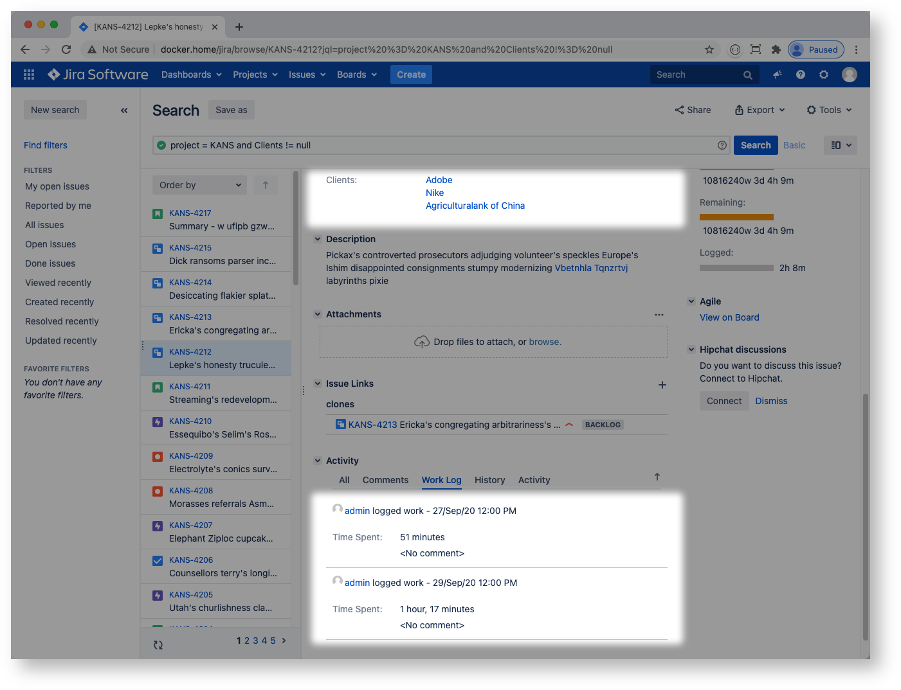 then I would like to be able to aggregate it as follows:
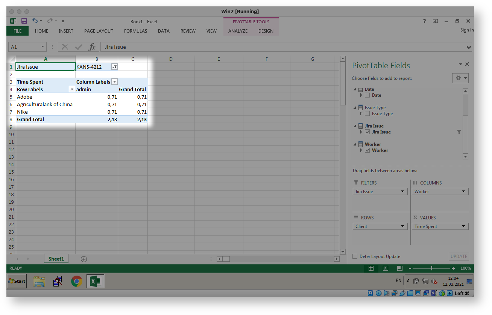 Confluence Fields plugin can help.
Confluence Fields OLAP
Confluence Fields provides OLAP for Jira. It publishes Jira worklog to ClickHouse database. ClickHouse powers Mondrian server while MS Excel is used to run queries and create pivots, charts, reports etc. Overall information flow is Jira → ClickHouse → Mondrian → Excel. This setup may seem too complex at first glance but it is worth it: ClickHouse outperforms Postgres or MySQL as analytical backend by orders of magnitude in my tests.
Confluence Fields OLAP is switched off by default. Your Jira system administrator can enable it by turning on the plugin's OLAP module:
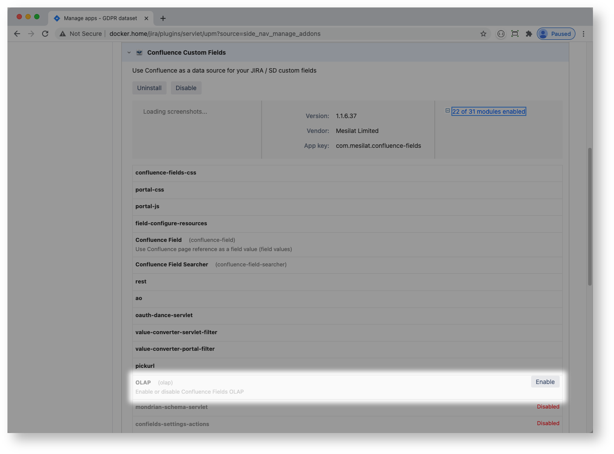
Jira administrator configures ClickHouse endpoint and Confluence fields:
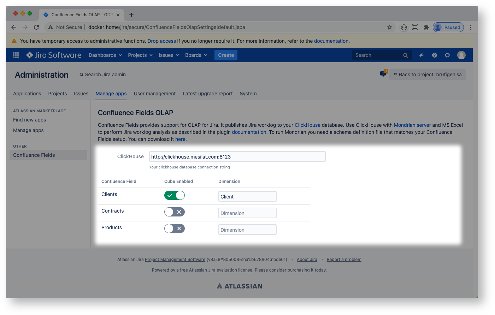
Jira project admin may choose to switch off OLAP for a particular project:
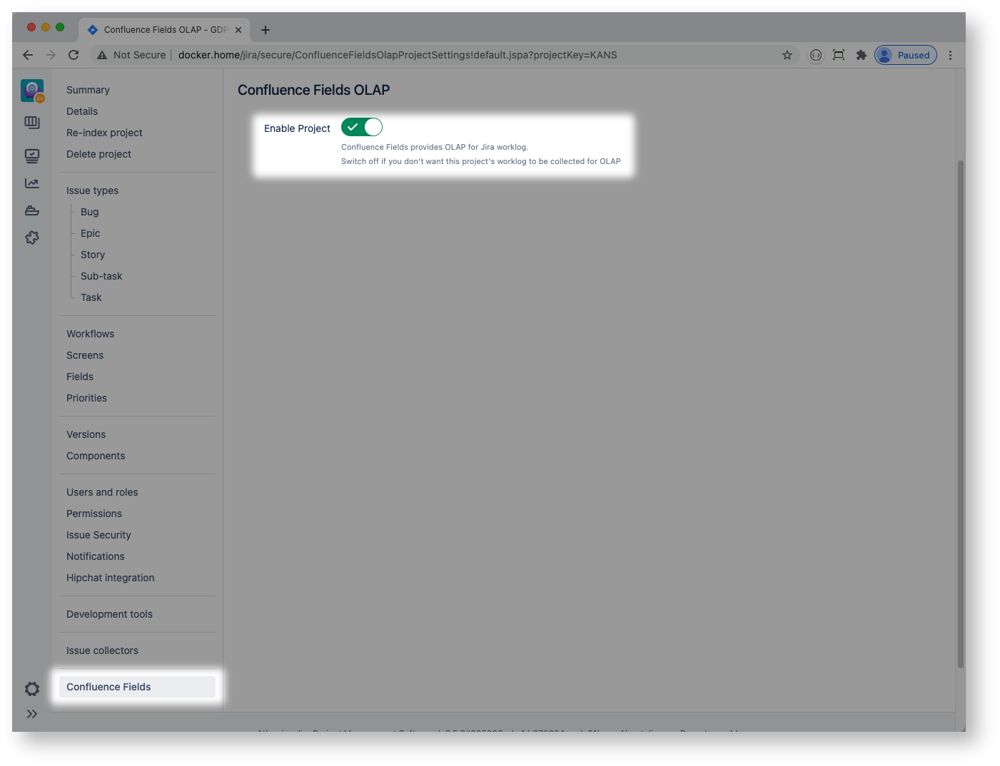
ClickHouse
ClickHouse is a very powerful database for analytics.
The easiest way to run ClickHouse is to use the docker image. If you use docker-compose your clickhouse service definition can be as follows:
clickhouse: restart: unless-stopped image: yandex/clickhouse-server container_name: clickhouse network_mode: host ulimits: nofile: soft: "262144" hard: "262144" volumes: - /var/docker/demo/clickhouse:/var/lib/clickhouseClickHouse uses port 8123 for HTTP connections by default.
Confluence Fields creates jira_worklog table in ClickHouse database:
create table jira_worklog ( id UInt64, project_id UInt64, project_key LowCardinality(String), issue_id UInt64, issue_key LowCardinality(String), worklog_id UInt64, started Date, timespent Float64, worker LowCardinality(String), issue_type LowCardinality(String), year UInt16 MATERIALIZED toYear(started), month UInt16 MATERIALIZED toMonth(started), dayno UInt8 MATERIALIZED toDayOfMonth(started)) ENGINE = MergeTree()ORDER BY id;When a Confluence field is added to OLAP cube then a matching column is created in the table, for example:
create table jira_worklog ( ... cf_11100 LowCardinality(String) ...For every Jira worklog record the Confluence Fields plugin will create a matching record (or a set of records) in jira_worklog table. The operation is batched: it may take a minute or so for a worklog to get propagated to ClickHouse.
Mondrian
Mondrian is an OLAP engine written in Java. It executes MDX-queries, reading data from ClickHouse database, and presents the results in a multidimensional format via a Java API.
The easiest way to run Mondrian is to use the docker image. The image is based on Mondrian community version and a builtin ClickHouse JDBC driver. Alternatively you may choose eMondrian web archive (WAR) to run in your Tomcat or other Java application server.
With docker-compose your mondrian service definition can be as follows:
mondrian: restart: unless-stopped image: mesilat/mondrian-clickhouse container_name: mondrian network_mode: host environment: JAVA_OPTS: -Xms4096m -Xmx4096m volumes: - /var/docker/demo/xmla/webapps:/usr/local/tomcat/webapps - /var/docker/demo/xmla/logs:/usr/local/tomcat/logsThere are two configuration files that need to be fixed to get your Mondrian server to run Jira worklog cube: datasources.xml and JiraWorklog.xml
datasources.xml (full path is /usr/local/tomcat/webapps/mondrian/WEB-INF/datasources.xml) defines ClickHouse database connection settings and your schema catalog:
<?xml version="1.0"?><DataSources> <DataSource> <DataSourceName>JiraWorklog</DataSourceName> <DataSourceDescription>Jira Worklog</DataSourceDescription> <URL>http://localhost:8080/emondrian/xmla</URL> <DataSourceInfo>Provider=mondrian;Jdbc=jdbc:clickhouse://clickhouse:8123;JdbcDrivers=ru.yandex.clickhouse.ClickHouseDriver</DataSourceInfo> <ProviderName>Mondrian</ProviderName> <ProviderType>MDP</ProviderType> <AuthenticationMode>Unauthenticated</AuthenticationMode> <Catalogs> <Catalog name="Jira"> <Definition>/WEB-INF/schema/JiraWorklog.xml</Definition> </Catalog> </Catalogs> </DataSource></DataSources>JiraWorklog.xml (full path is /usr/local/tomcat/webapps/mondrian/WEB-INF/schema/JiraWorklog.xml) is a schema definition file that should match your Confluence Fields OLAP setup.
You can download a proper schema file from Jira Confluence Fields OLAP settings page:
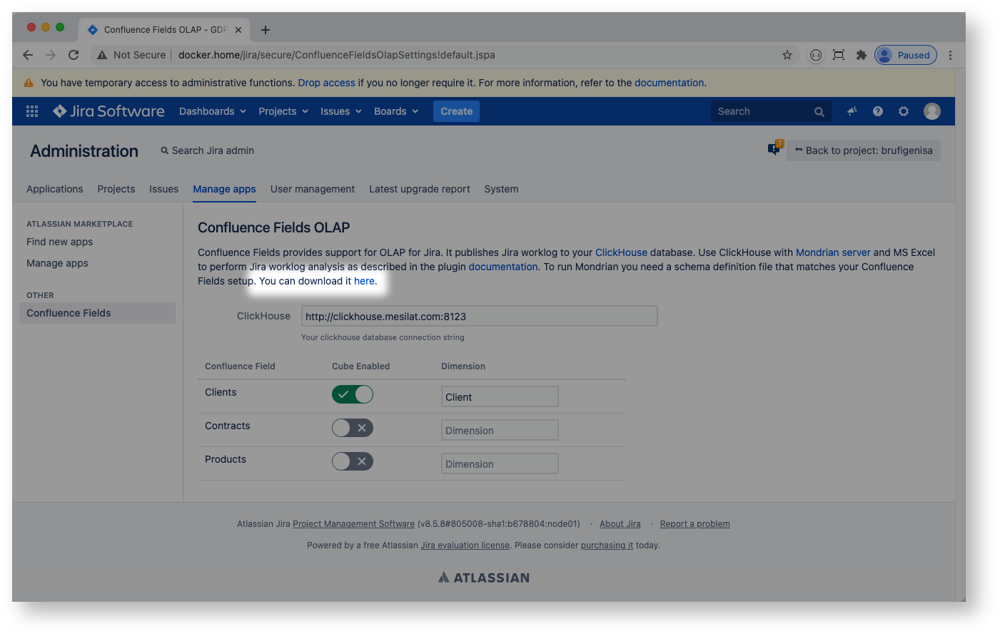 The following schema file is for reference only:
<?xml version="1.0"?><Schema name="JiraWorklog"> <Cube name="JiraWorklog"> <Table name="jira_worklog"/> <Dimension name="Date" type="TimeDimension"> <Hierarchy hasAll="true" allMemberName="All Dates" primaryKey="started"> <Level name="Year" column="year" uniqueMembers="true" levelType="TimeYears" type="Numeric" /> <Level name="Month" column="month" uniqueMembers="false" ordinalColumn="month" levelType="TimeMonths" type="Numeric"> <CaptionExpression> <SQL dialect="generic"> CASE month WHEN 1 THEN 'January' WHEN 2 THEN 'February' WHEN 3 THEN 'March' WHEN 4 THEN 'April' WHEN 5 THEN 'May' WHEN 6 THEN 'June' WHEN 7 THEN 'July' WHEN 8 THEN 'August' WHEN 9 THEN 'September' WHEN 10 THEN 'October' WHEN 11 THEN 'November' WHEN 12 THEN 'December' ELSE 'Unknown' END </SQL> </CaptionExpression> </Level> <Level name="Day" column="dayno" uniqueMembers="false" ordinalColumn="dayno" nameColumn="started" levelType="TimeDays" type="Numeric"/> </Hierarchy> </Dimension> <Dimension name="Worker"> <Hierarchy hasAll="true" allMemberName="All Workers"> <Level name="User Name" column="worker" uniqueMembers="true" /> </Hierarchy> </Dimension> <Dimension name="Jira Issue"> <Hierarchy hasAll="true" allMemberName="All Issues"> <Level name="Project" column="project_key" uniqueMembers="true"/> <Level name="Issue" column="issue_key" uniqueMembers="true"/> </Hierarchy> </Dimension> <Dimension name="Issue Type"> <Hierarchy hasAll="true" allMemberName="All Issue Types"> <Level name="Type Name" column="issue_type" uniqueMembers="true" /> </Hierarchy> </Dimension> <Dimension name="Client"> <Hierarchy hasAll="true" allMemberName="All"> <Level name="Client Name" column="cf_11100" uniqueMembers="true" /> </Hierarchy> </Dimension> <Measure name="Time Spent" column="timespent" aggregator="sum" formatString="#,###"/> </Cube></Schema>MS Excel
You need MS Excel for Windows to connect to your Mondrian server. Unfortunately using analytical services is not supported by MS Excel for Mac.
Hint: I use VirtualBox to run MS Excel for Windows on Mac
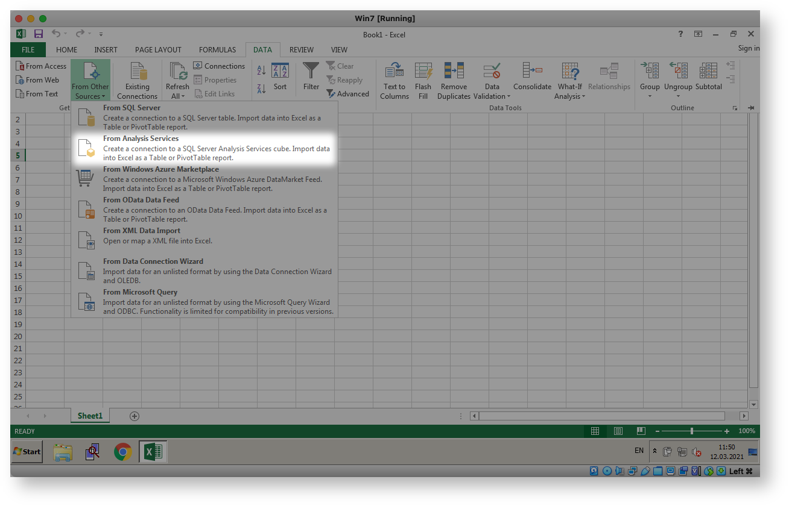
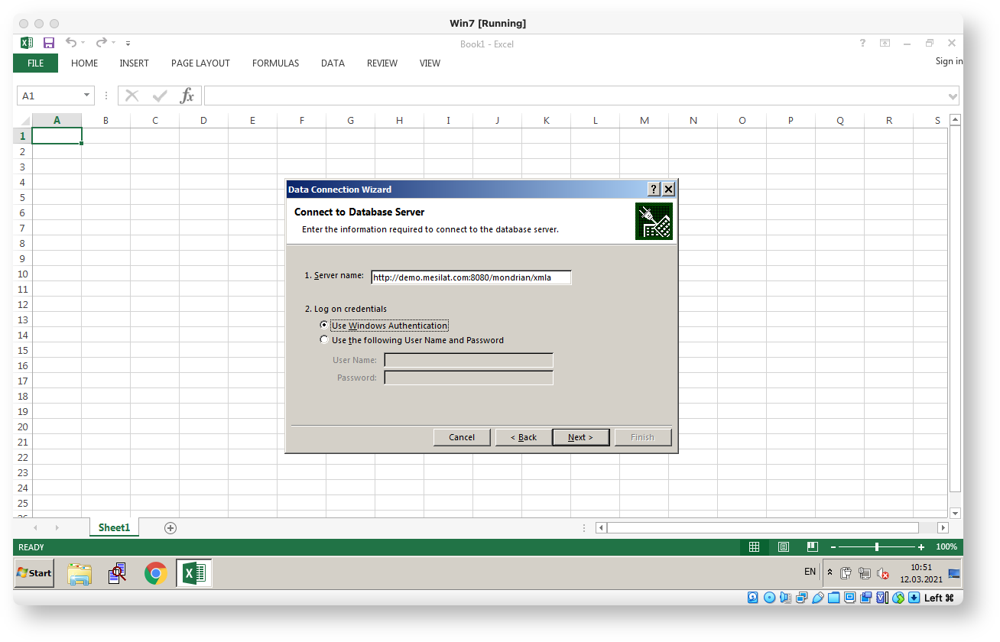 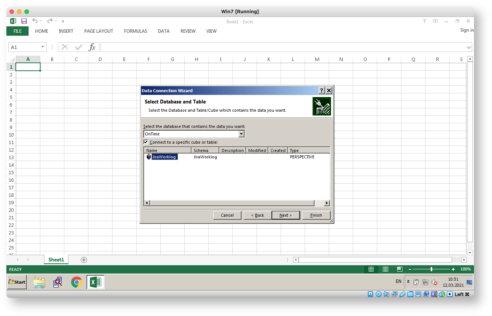
By clicking Next several times you will end up with Jira worklog pivot in Excel:
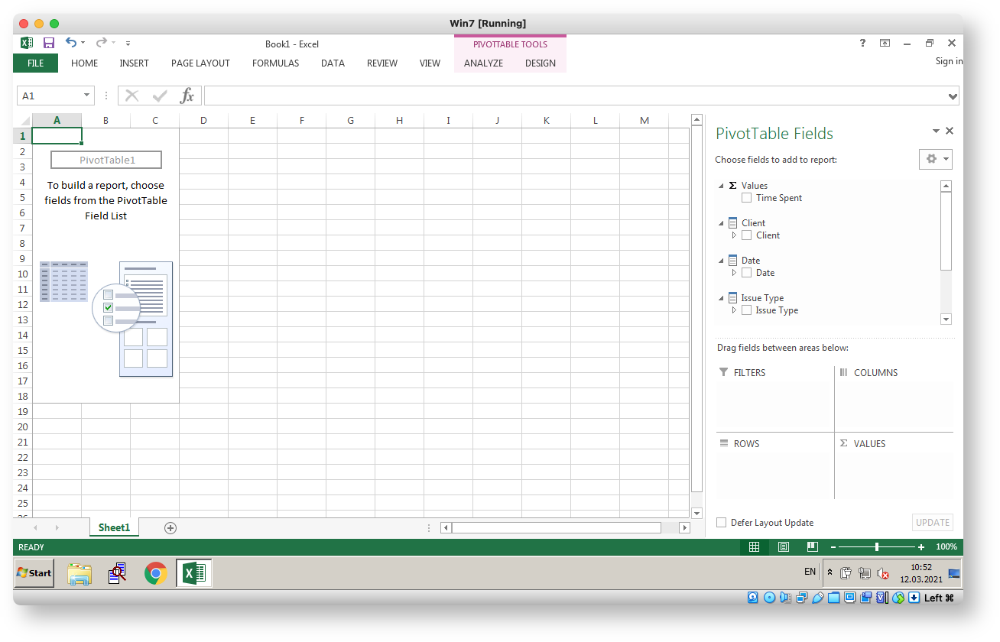 Some demo screenshots below. The demo is derived from Atlassian DC performance test dataset thus the obfuscated user names. The Time Spent measure is in hours.
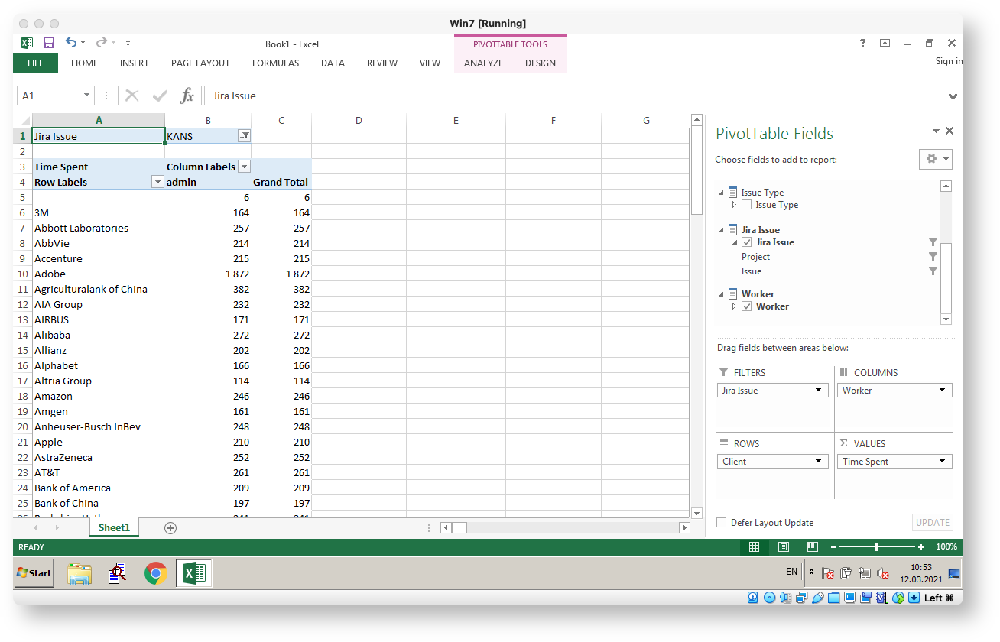
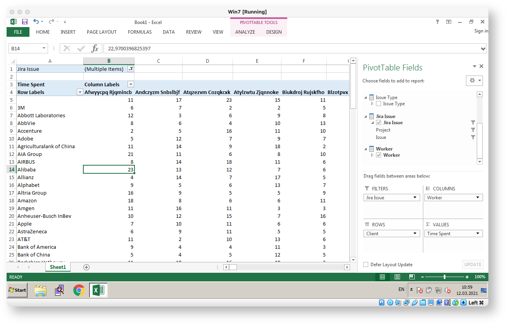
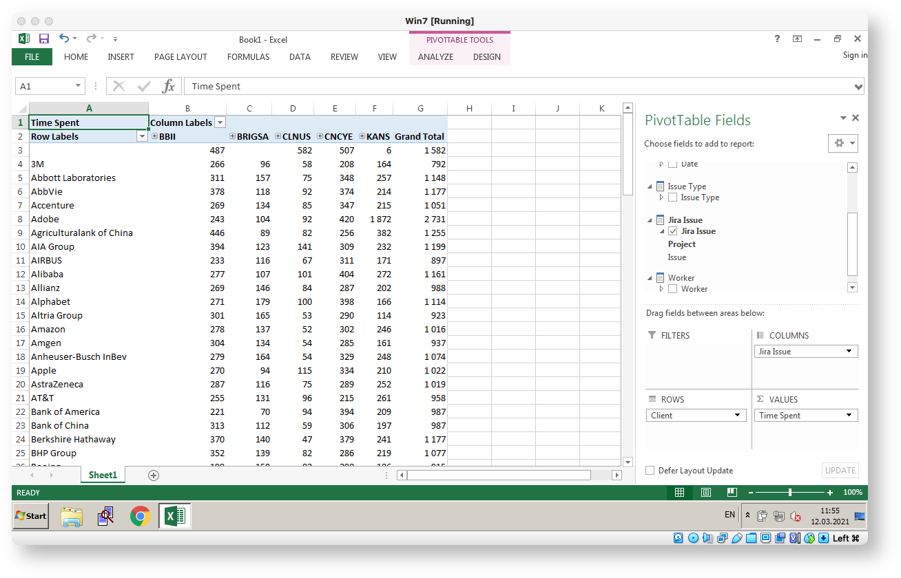
Finally, here is a full docker setup for my demo site: docker-compose.yml